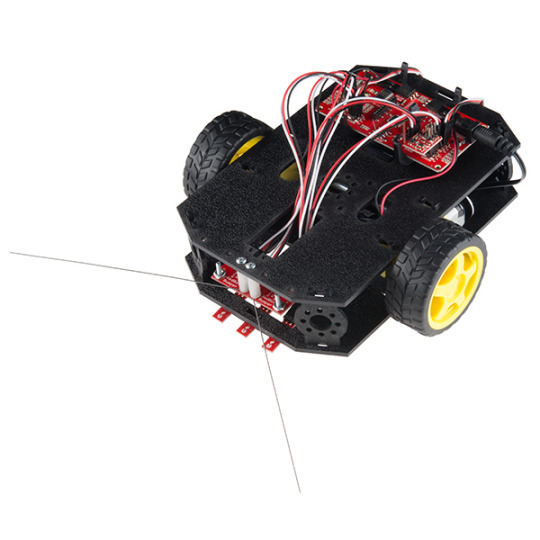

Where are all the Raspberry Pi robots?
My daughters are really into robots. They love going to the science camps during school holidays and the highlight is always programming the lego mindstorm robots.
So I got all excited about getting them a robot for xmas, and so I went looking. My friend Roy recently blogged about robots (hacking a Roomba! and Makeblock) and this really wetted my appetite :)
In the end I got them a SparkFun Redbot inventor kit. Its an Arduino with line followers, whiskers, accelerometer for bump detection and magnetic wheel rotation counters.
But its really bugging me how limited the Arduino is!
Here’s the Raspberry Pi Zero that I read about recently: